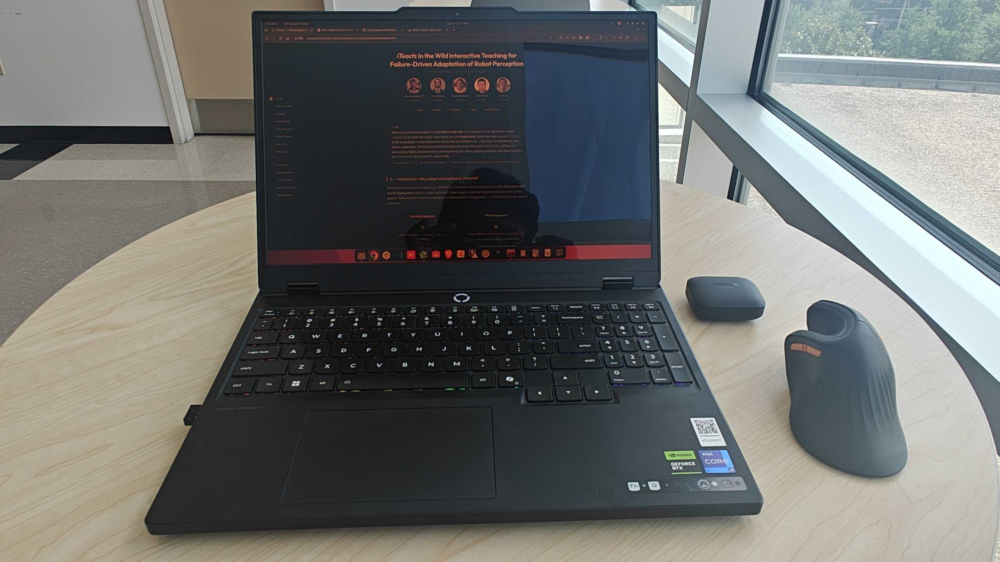
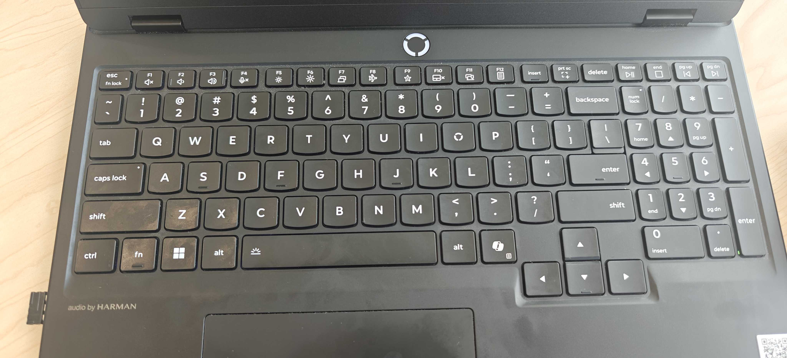

Remapping the Copilot key to Ctrl on Ubuntu 22.04

A note before we start: This post was created with the help of an LLM, so please do a fact check before applying anything. I had attempted this remap several times on my own without success — an LLM-assisted debugging session is what finally worked for me, so I documented the recipe here. Also, this trade is personal: right Ctrl is important to my workflow, which is why I remapped it. If the Copilot key is more useful for your use case, please keep it as it is.
Index
- Index
- The Problem: A Key I Never Press
- Trivia: Why Does This Key Exist At All?
- The Twist: It Is Not Actually a Key
- Why the Usual Tools Fail
- The Fix: keyd
- The Gotcha That Cost Me Ten Minutes
- Verifying It Works
- Notes and Edge Cases
- Closing Thoughts
The Problem: A Key I Never Press
My Lenovo Legion 5 (15IRX10) has no right Ctrl key. In its place sits the Copilot key — the one with the swirly logo next to right Alt. I press Ctrl hundreds of times a day and Copilot exactly zero times, so the trade was obvious: turn the Copilot key into Ctrl. 🎯

How hard could a single key remap be? As it turns out, harder than expected — because of what this key actually is.
Trivia: Why Does This Key Exist At All?
The Copilot key is a Microsoft creation, not a laptop-maker’s idea. Announced on January 4, 2024, Microsoft called it the “first significant change to the Windows PC keyboard in nearly three decades” — the last one being the Windows key itself, introduced in 1994. Pressing it launches Microsoft Copilot, their AI assistant, on Windows 11.
It became part of the broader AI-PC wave: the key was included in Microsoft’s “AI PC” definition, and 2024-onward laptops from Lenovo, Dell, HP, and others adopted it — on compact layouts it typically takes the spot where right Ctrl or the menu key used to live, which is exactly how I met it.
The Win+Shift+F23 chord we saw above is a neat piece of engineering history: rather than defining a brand-new keycode (which would have meant touching the USB HID standard and keyboard drivers everywhere), Microsoft hardwired the key to emit a chord built from keycodes that had sat unused in the HID spec for decades — F23 finally found a job. A clever shortcut for instant compatibility with every OS and driver stack; also the reason remapping it takes chord-matching tricks rather than a one-line keycode swap.
Windows 11 later added a built-in way to customize the key (Settings → Personalization → Text input) to launch the app of your choice. On Linux the key simply does nothing out of the box — so remapping it is pure upside: you are not giving anything up. 📈
The Twist: It Is Not Actually a Key
Run keyd’s event monitor and press the Copilot key once:
sudo keyd -m
ITE Tech. Inc. ITE Device(8258) Keyboard 048d:c195:da10980f leftmeta down
ITE Tech. Inc. ITE Device(8258) Keyboard 048d:c195:da10980f leftshift down
ITE Tech. Inc. ITE Device(8258) Keyboard 048d:c195:da10980f f23 down
ITE Tech. Inc. ITE Device(8258) Keyboard 048d:c195:da10980f f23 up
ITE Tech. Inc. ITE Device(8258) Keyboard 048d:c195:da10980f leftshift up
ITE Tech. Inc. ITE Device(8258) Keyboard 048d:c195:da10980f leftmeta up
One physical key, three key events. The firmware emits the chord LeftMeta + LeftShift + F23 — the shortcut that launches Copilot on Windows. There is no “Copilot keycode”. The OS never sees a single key; it sees a macro. 🤯
💡 The exact chord varies by laptop. Some machines emit only
leftshift+leftmetawithout thef23. Always check withsudo keyd -mbefore writing any config.
Why the Usual Tools Fail
This firmware-level macro is exactly why the classic remapping approaches fall flat:
- xmodmap / GNOME Tweaks: remap single keysyms. There is no single keysym here — and xmodmap is an X11 utility, so it does nothing for Wayland sessions.
- udev hwdb: can remap the
f23scancode torightctrl, but the firmware still sends Meta and Shift alongside it. You end up pressingMeta+Shift+Ctrl— useless for shortcuts.
What we need is something that can match the chord and replace the whole thing. That is precisely what keyd does: a kernel-level remapping daemon that grabs input devices, rewrites events, and re-emits them through a virtual keyboard. It works in Wayland, X11, and even the virtual console.
The Fix: keyd
Ubuntu 22.04 does not ship keyd (it only entered the Ubuntu archive in 25.10), but building from source takes under a minute and needs nothing beyond a C compiler and the kernel headers already present on most systems:
sudo apt install git build-essential
git clone https://github.com/rvaiya/keyd
cd keyd
make && sudo make install
sudo systemctl enable --now keyd
Then create /etc/keyd/default.conf:
[ids]
*
[main]
leftshift+leftmeta+f23 = layer(control)
The left-hand side is a keyd chord: it fires only when all three keys arrive together (within keyd’s chord window), which is exactly how the firmware sends them. The right-hand side activates the control layer, so holding the Copilot key now behaves like holding Ctrl.
Apply it:
sudo keyd reload
Done. Copilot+C copies, Copilot+T opens a new browser tab, Copilot+L focuses the address bar. The dead key lives. ⚡
The Gotcha That Cost Me Ten Minutes
After installing keyd I ran sudo keyd reload and… nothing changed. keyd -m kept showing the raw leftmeta/leftshift/f23 events with no remapping in sight.
The reason was hiding in the journal:
journalctl -u keyd --no-pager | tail
keyd[19693]: DEVICE: ignoring 048d:c195:da10980f (ITE Tech. Inc. ITE Device(8258) Keyboard)
make install installs the daemon and the systemd unit, but it does not create a config file. With no /etc/keyd/default.conf, keyd has no [ids] section to match against, so it politely ignores every keyboard on the system. The service runs, reload succeeds, and nothing happens — a perfectly silent failure. 🤦
Two diagnostics worth remembering:
-
keyd -mshows both sides of the pipeline. Raw hardware events appear under your physical keyboard’s name; remapped output appears underkeyd virtual keyboard. If you only see the former, keyd is not grabbing your device. - The journal names every device decision.
DEVICE: ignoring ...vs.DEVICE: match ...tells you instantly whether your config applies to your keyboard.
Verifying It Works
After writing the config and reloading, the journal flipped from ignoring to match:
keyd[19693]: DEVICE: match 048d:c195:da10980f /etc/keyd/default.conf (ITE Tech. Inc. ITE Device(8258) Keyboard)
keyd[19693]: DEVICE: match 0001:0001:70533846 /etc/keyd/default.conf (AT Translated Set 2 keyboard)
And holding Copilot+C over selected text copied it. ✅
Notes and Edge Cases
- It maps to left Ctrl behavior. keyd’s control layer emits left Ctrl, not right Ctrl. For virtually everything — shortcuts, terminals, IDEs — the two are interchangeable. If some software of yours genuinely distinguishes right Ctrl, look at remap-copilot, a small libevdev daemon built for exactly that.
- Keep the
f23in the chord. A two-keyleftshift+leftmetachord also works on machines that emit nof23, but on machines that do, the three-key form avoids accidentally hijacking real Shift+Super shortcuts (e.g., GNOME’s Shift+Super+arrow for moving windows between monitors) when you press them near-simultaneously. - If holding does not register on your machine, your firmware may fire the full press+release sequence on key-down. The workaround is
oneshot(control)instead oflayer(control): tap Copilot, then tap C, and Ctrl+C is emitted.
Closing Thoughts
The Copilot key turned out to be a delightful little case study in how modern keyboards actually work: what looks like a key can be a macro, and remapping it means reaching for tooling that operates below the display server. keyd handles it in four lines of config — once you know the config file does not create itself. 😄
If your keyboard has a key you never press sitting where one you press constantly used to be, now you know how to make it yours.
References
- Microsoft: Introducing a new Copilot key (Windows Experience Blog, Jan 4, 2024)
- Intel: the Copilot key is a requirement under the “AI PC” program definition
- Pureinfotech: How to customize the Copilot key action on Windows 11
- keyd — A key remapping daemon for Linux
- remap-copilot — libevdev daemon for the Copilot key
- Manjaro forum: How to remap the Copilot key to right control